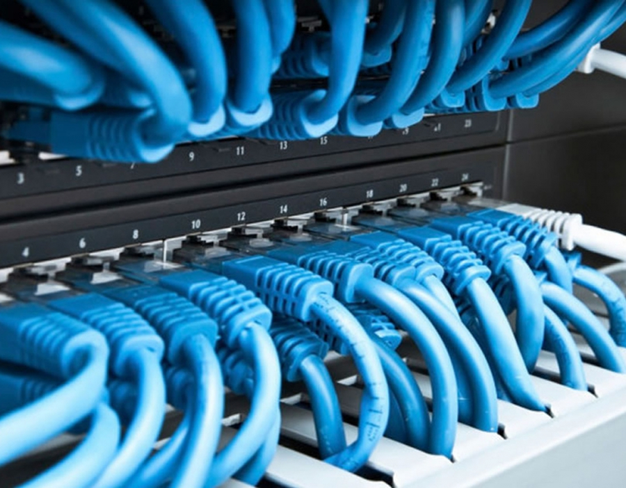

Sieć LAN w firmie. Rodzaje sieci. Urządzenia sieciowe w firmie. Rozpoznawanie urządzeń i czytanie dokumentacji.
Aby mieć siec LAN w fimie musimy wykonać poszczególne punkty:
- Rozplanowanie liczby komputerów, innych urządzeń w danym biurze
- Rozplanowanie okablowania strukturalnego
- Znalezienie odpowiedniego miejsca na switch
- Sprawdzenie, czy każdy z komputerów ma kartę sieciową przewodową lub bezprzewodową
- Sprawdzenie zasilania switcha i innych urządzeń
- Podłączenie Internetu
- Konfiguracja systemu
Sieć LAN musi spełniać takie cechy jak:
- Skalowalna
- Redundantna (wykorzystanie większej liczby urządzeń w celu zapewnienia pełnego bezpieczeństwa danych)
- Wydajna
- Bezpieczna
- Łatwa w utrzymaniu i zarządzaniu
Urzadzenia sieciowe:
- karty sieciowe w komputerach
- router
- switch
- Most (z Wi-Fi na kabel)
- okablowanie
- Wzmacniacze sygnału Wi-Fi

Rodzaje sieci:
- LAN (Local Area Network) -sieć zajmująca najmniejszy obszar np. w szkole
- MAN (Metropolitan Area Network) -sieć zajmująca większy obszar niż pomieszczenie czy budynek. Sieci typu MAN zlokalizowane są na obszarze całego miasta
- WAN (Wide Area Network) -rozległa sieć połączonych ze sobą sieci LAN i MAN